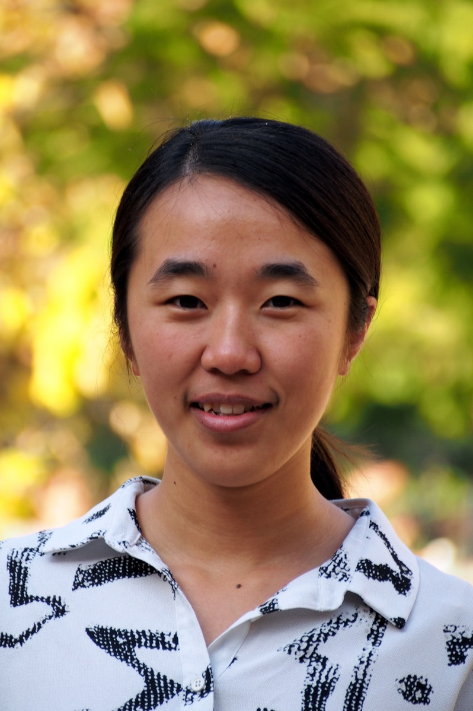

People
We are in the Department of Microbiology, Immunology, & Molecular Genetics at UCLA. We are also affliated with the Bioinformatics Interdepartmental Ph.D. Program (IDP).
PRINCIPAL INVESTIGATORS
Yi Xing
Professor, Microbiology, Immunology, & Molecular GeneticsProfessor (by courtesy), Statistics Director, Bioinformatics Interdepartmental Ph.D. Program Dr. Yi Xing received his Ph.D. training in Bioinformatics with Dr. Christopher Lee at UCLA (2001-2006), and his postdoctoral training with Drs. Wing Hung Wong and Matthew Scott at the Stanford University (2006-2007). Dr. Xing has an extensive publication record in bioinformatics, genomics, and RNA biology. He serves as a regular member of the NIH Genomics, Computational Biology, and Technology (GCAT) grant review panel. |
|
Lan LinAssociate Researcher, Microbiology, Immunology, & Molecular GeneticsDr. Lan Lin received her B.S. degree in Biotechnology from Peking University, China, in 2001, and her Ph.D. degree in Cellular and Molecular Pathology from UCLA in 2007. Dr. Lin develops and applies novel high throughput strategies to study post-transcriptional RNA regulation in development and disease. |
SENIOR RESEARCH ASSOCIATE
Shihao ShenShihao Shen received Ph.D. in Biostatistics from University of Iowa. He develops statistical algorithms for high-throughput genomic analyses of transcriptome isoform complexity. He recently received a Human Biology Fellowship from Huntington’s Disease Society of America. |
POSTDOC FELLOWS
Emad Bahrami Samani (2015-)Emad received his Ph.D. in Computational Biology and Bioinformatics from University of Southern California (USC). His main research interests include genetic variation of post-transcriptional RNA regulation and the functional connections between RNA secondary structure, protein-RNA interaction and RNA metabolism. |
Eddie Park (2015-)Eddie Park received his Ph.D. degree in Biological Sciences from the University of California, Irvine. He is interested in integrating experimental and computational approaches to solve biological questions. |
||
Samir Adhikari (2017-)Samir Adhikari received his Ph.D. degree from the Beijing Institute of Genomics, China. He is interested in RNA modification and epitranscriptome analysis. |

|
Ruijiao Xin (2017-)Ruijiao Xin received her Ph.D. degree from the University of Texas, Austin. She is interested in high-throughput analyses of transcriptome complexity in disease. |
GRADUATE & ROTATION STUDENTS
Yida Zhang (2013-)Ph.D. student, Bioinformatics IDP |
Chengyang Wang (2014-)Ph.D. student, Bioinformatics IDP |
||
Zijun Zhang (2014-)Ph.D. student, Bioinformatics IDP |
Amal Katrib (2015-)Ph.D. student, Biomedical Physics |
||
Levon Demirdjian (2015-)Ph.D. student, Statistics |
Zhicheng Pan (2015-)Ph.D. student, Bioinformatics IDP |
||
 |
Yang Pan (2015-)Ph.D. student, Bioinformatics IDP |
 |
Yuanyuan Wang (2015-)Ph.D. student, Bioinformatics IDP |
Yan Gao (2016-)Visiting Ph.D. student, Harbin Institute of Technology |
Harry Yang (2016-)Ph.D. student, Bioinformatics IDP |
||
Xinyuan Chen (2016-)Ph.D. student, Genetics and Genomics Ph.D. Program |
STAFF RESEARCH ASSOCIATES
Samantha Gaerlan (2016-) |
Zhijie Xie (2017-) |
UNDERGRADUATE STUDENTS
Andrea Castro (2014-)Microbiology, Immunology, & Molecular Genetics |
Agnes Premkumar (2015-)Microbiology, Immunology, & Molecular Genetics |
||
Diane Park (2015-)Undeclared Engineering, prospective Microbiology, Immunology, & Molecular Genetics |
Alejandra Rosas (2015-)Biology |
||
Aida Akopyan (2015-)Microbiology, Immunology, & Molecular Genetics |
ALUMNI
COLLABORATORS